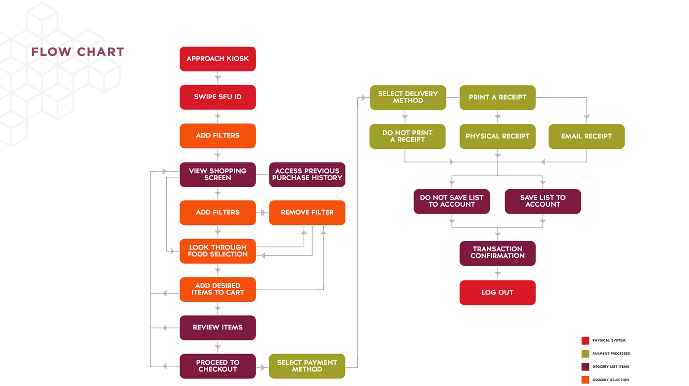
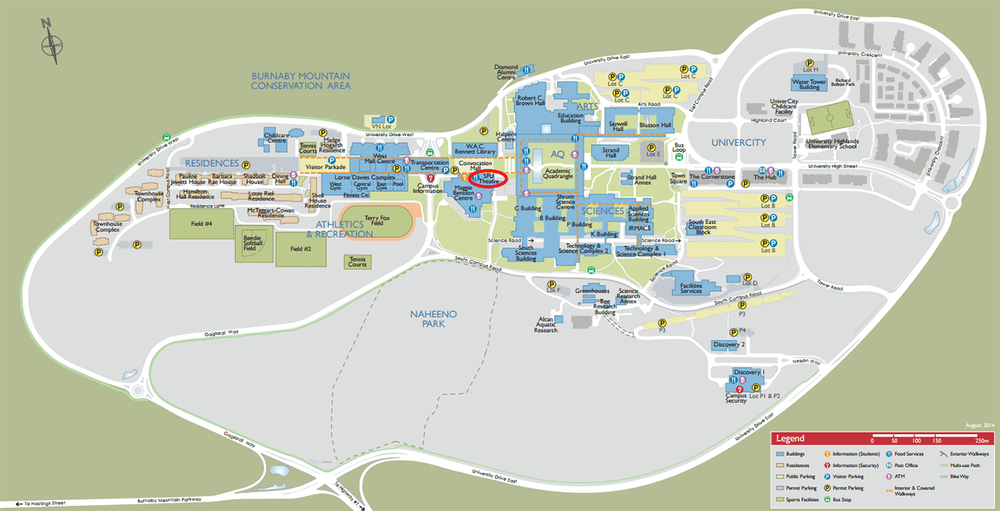
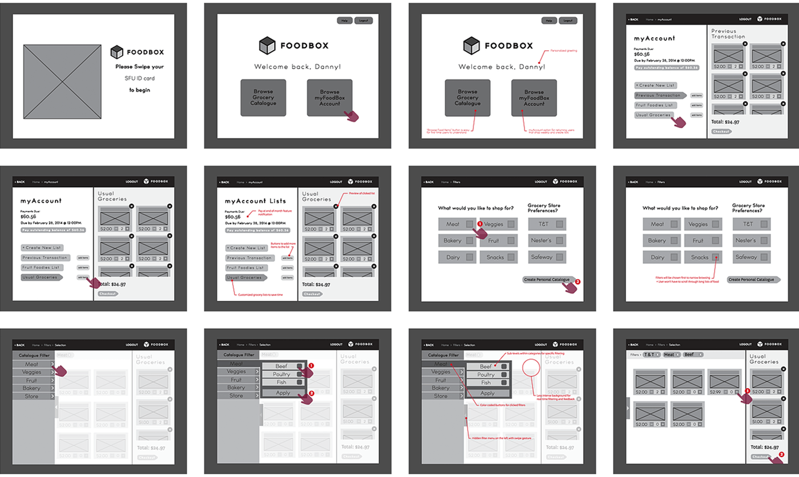
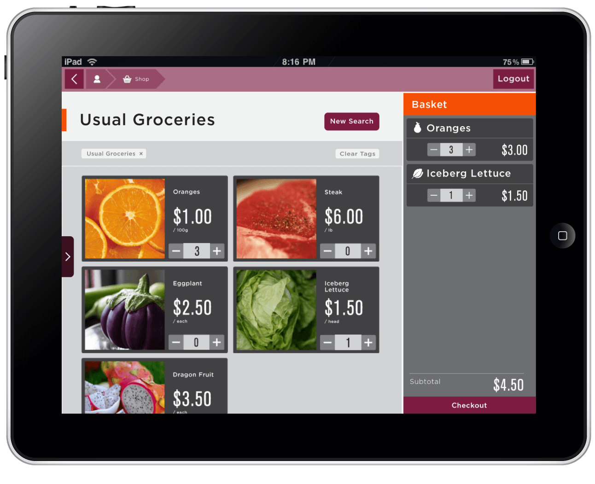

Team: Jin (Dou) Huang, Andy Shin, Janine Wong, Edwy Woo
Role: Interface Design, User Experience Design, Prototyping, Research, User Testing
Tools: Adobe Illustrator, Axure, Microsoft Powerpoint, Design Evaluation Methods
View Presentation Slide Deck (Powerpoint)
See Mock Project Website
See Persona
Try Working Prototype
My role in this project was interaction design. I worked alongside a team member to prototype the entire working interface and its iterations within Axure. I also participated in the experience design process by conducting research and usability testing to create content for the charts below.
The idea behind Foodbox was inspired by the technology age and experimental digital grocery stores. This inspiration was combined with my personal experience while spending some time on SFU’s Burnaby campus with an international student. The Simon Fraser University campus is quite isolated on a Burnaby Mountain with only 1 grocery store at UniverCity (far East) which is about a 20 minute walk from the Residences(far West).
Due to the university campus and housing locations, grocery shopping can be a burden to SFU residents. Foodbox ventures into the online grocery shopping process to give more variety and increase efficiency for SFU student residents to grocery shop. This can free up more time for home cooking, and academic or social aspects of student life.
The final visual design and interactions implemented in the working prototype are based off of these wireframes. Think aloud user testing methods were conducted with fellow SFU peers to help determine which interactions and gestures should be kept or changed.
Moving forward, I believe there are more features which could be considered such as cellphone syncing and moving away from the kiosk design. Overall, the project was quite successful, but has potential for other implications and design. We focused on a specific audience, but the implication could potentially be beneficial for a broader audience.
